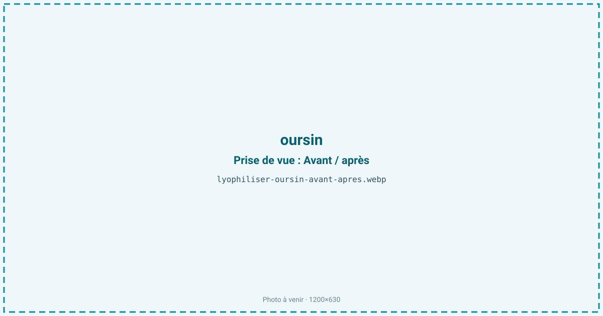
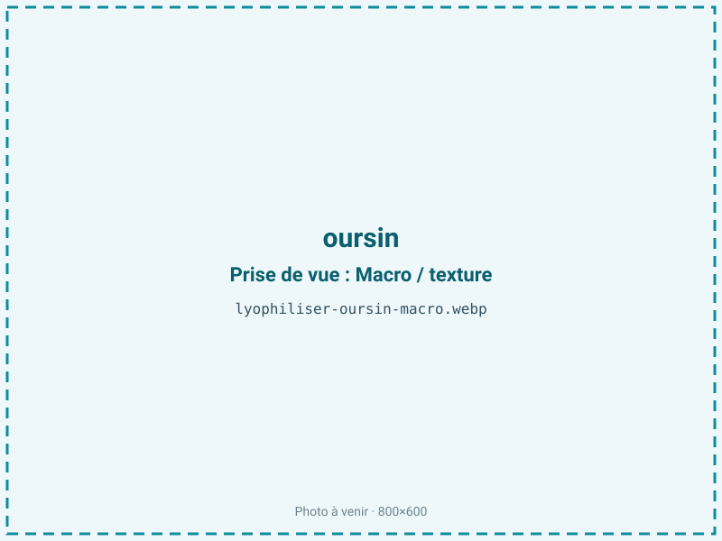
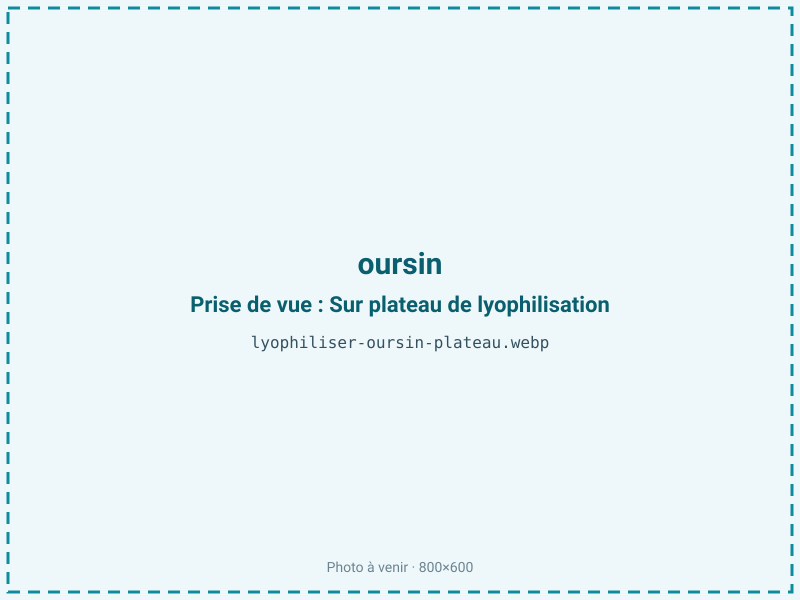
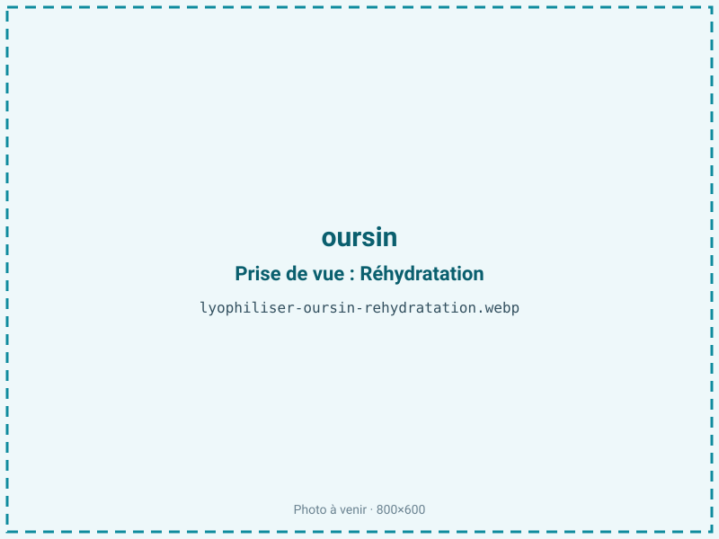

Lyophiliser des oursins
L'oursin est un produit d'ultra-fraîcheur : ses gonades s'oxydent et amerissent en quelques heures hors de l'eau. Lyophilisées, ces langues corail deviennent une poudre stable qui fixe l'iode et la douceur du frais, sans cuisson. Un assaisonnement rare et cher, réservé à la gastronomie.

En bref
Comment oursin se comporte à la lyophilisation
L'oursin ne se lyophilise pas entier : on récupère les cinq gonades, ou « langues », qui tapissent l'intérieur du test. Ces gonades contiennent environ 78 % d'eau mais une fraction lipidique notable, de 2 à 10 %, riche en acides gras polyinsaturés et en caroténoïdes — dont l'échinénone, responsable de la teinte orange à corail. C'est cette combinaison de lipides et de pigments qui fait tout le goût, et toute la fragilité : à l'air, les gonades s'oxydent en quelques heures et virent à l'amer. La structure est molle, presque crémeuse, sans fibre de soutien, ce qui rend la langue très sensible à l'écrasement avant congélation. À la sublimation, cette absence de charpente cellulaire ferme favorise le collapse : un front de séchage mené trop chaud tasse la gonade au lieu de la laisser poreuse. Les composés iodés et les acides aminés libres, porteurs de l'umami marin, traversent bien le froid, mais les caroténoïdes et les acides gras exposés deviennent le talon d'Achille de la conservation.
Paramètres de cycle
Prélever les gonades avec précaution et les rincer très brièvement à l'eau de mer filtrée pour ôter les débris, sans les gorger d'eau douce qui les délite. Congeler rapidement à −30 voire −40 °C : la texture crémeuse et sans fibre exige de petits cristaux pour ne pas se déliter à la réhydratation. Étaler les langues à plat, en couche fine, sans les empiler ni les presser. En sublimation, maintenir une clayette modérée, autour de 20 °C, pour éviter le collapse d'une matière molle et grasse. La cible d'aw se situe entre 0,30 et 0,50 : l'oursin étant riche en lipides oxydables, on ne sur-sèche pas, l'optimum de stabilité oxydative se trouvant dans cette fourchette et non plus bas. Le critère d'arrêt privilégie la stabilité à la sécheresse maximale, avec contrôle d'aw en fin de cycle.
Pièges connus
- Manipuler la langue d'oursin sans l'écraser.
- Riche en lipides : oxydation rapide sans barrière azotée.



Variantes & provenance
L'espèce commande la couleur et le goût : l'oursin violet de Méditerranée (Paracentrotus lividus) donne des langues corail intense, quand d'autres espèces tirent vers le jaune pâle. La saison est décisive : les gonades sont pleines et fermes en hiver, au moment de la maturation sexuelle, et se vident au printemps après la ponte, période où le rendement s'effondre. La femelle offre des langues plus orangées, le mâle plus claires. La provenance et l'alimentation (oursins broutant des algues) modulent l'intensité du pigment et la teneur en lipides, donc la sensibilité à l'oxydation et la durée de conservation à prévoir. Un oursin pêché trop tôt donne des gonades minces au rendement faible.
Conservation & DLUO
Le facteur limitant est l'oxydation lipidique, accélérée par les caroténoïdes et les acides gras polyinsaturés très présents dans les gonades ; c'est elle qui ramène l'amertume caractéristique de l'oursin passé. L'optimum de stabilité oxydative se situe entre aw 0,30 et 0,50 : en dessous de 0,30, on retire la monocouche d'eau qui protège les lipides, et le rancissement s'accélère au lieu de ralentir. La barrière azotée avec absorbeur d'oxygène n'est donc pas optionnelle. Comptez 4 à 7 mois en sachet standard, et 10 à 15 mois en barrière azotée. Le conditionnement doit être opaque : la lumière dégrade les caroténoïdes et ternit la couleur corail qui fait la valeur du produit. Un stockage au frais prolonge nettement la DLUO, la vitesse d'oxydation doublant environ tous les 10 °C.
4 à 7 mois en sachet, 10 à 15 mois en barrière azotée.
Estimez selon votre emballage :
Face aux autres procédés de séchage
Aucun séchage à chaud n'est réaliste pour l'oursin : à l'air chaud, les gonades cuisent, virent à l'amer et perdent leur douceur iodée en quelques minutes, la matière étant déjà oxydable à froid. Le micro-ondes sous vide impose un front chaud qui dégrade les caroténoïdes et les acides gras fragiles, sacrifiant précisément la couleur et le goût recherchés. La lyophilisation est la seule voie qui fixe la langue d'oursin dans un état proche du cru, sous forme de poudre ou de langue entière séchée. Le surcoût du froid est ici sans commune mesure avec la valeur d'un produit vendu au gramme.
Marchés & applications
La poudre d'oursin est un assaisonnement de chef, utilisé en touche sur un tartare, un beurre blanc, un risotto ou une émulsion, là où le produit frais serait impossible à stocker. Les clients types sont la restauration gastronomique, les épiceries fines et quelques marques d'assaisonnements marins premium. Pêcheurs et conchyliculteurs y voient un moyen de valoriser une ressource ultra-périssable et saisonnière, en lissant les pics de production sur l'année. Le marché reste de niche, à forte valeur ajoutée.
- Poudre d'oursin de chef
- Assaisonnement iodé premium
Questions fréquentes — oursin
Lyophilise-t-on l'oursin entier ?
Non, uniquement les cinq gonades (les « langues »). Le test, les piquants et les viscères sont retirés avant traitement.
Pourquoi l'oursin devient-il amer ?
À cause de l'oxydation des lipides et des caroténoïdes des gonades, qui démarre en quelques heures à l'air. Le froid et une barrière azotée la freinent.
Combien d'oursins pour 100 g de poudre ?
Le ratio est d'environ 5:1 sur gonades, mais chaque oursin ne fournit que quelques grammes de langues : il en faut beaucoup, ce qui explique le prix élevé du produit.
La couleur corail est-elle préservée ?
Oui à froid, mais elle craint la lumière et l'oxygène. Un conditionnement opaque et inerté est indispensable pour la maintenir.
Peut-on réhydrater les langues ?
Partiellement, pour retrouver une texture crémeuse. Le plus souvent on les utilise en poudre, saupoudrée en fin de dressage.
Faut-il rincer les gonades ?
Très brièvement et à l'eau de mer filtrée : l'eau douce en excès délite la gonade et fait fuir les sels iodés.
Quelle est la meilleure saison ?
L'hiver, quand les gonades sont pleines avant la ponte. Au printemps, elles se vident et le rendement chute fortement.
Prochaine étape : envoyez-nous 200 g
Vous avez les repères de l'oursin. La suite logique : nous envoyer un échantillon et repartir avec une fiche technique sur votre produit — rendement, aw finale, coût au kilo.
Tester l'oursin — 250 à 500 €Déductible de votre premier lot.